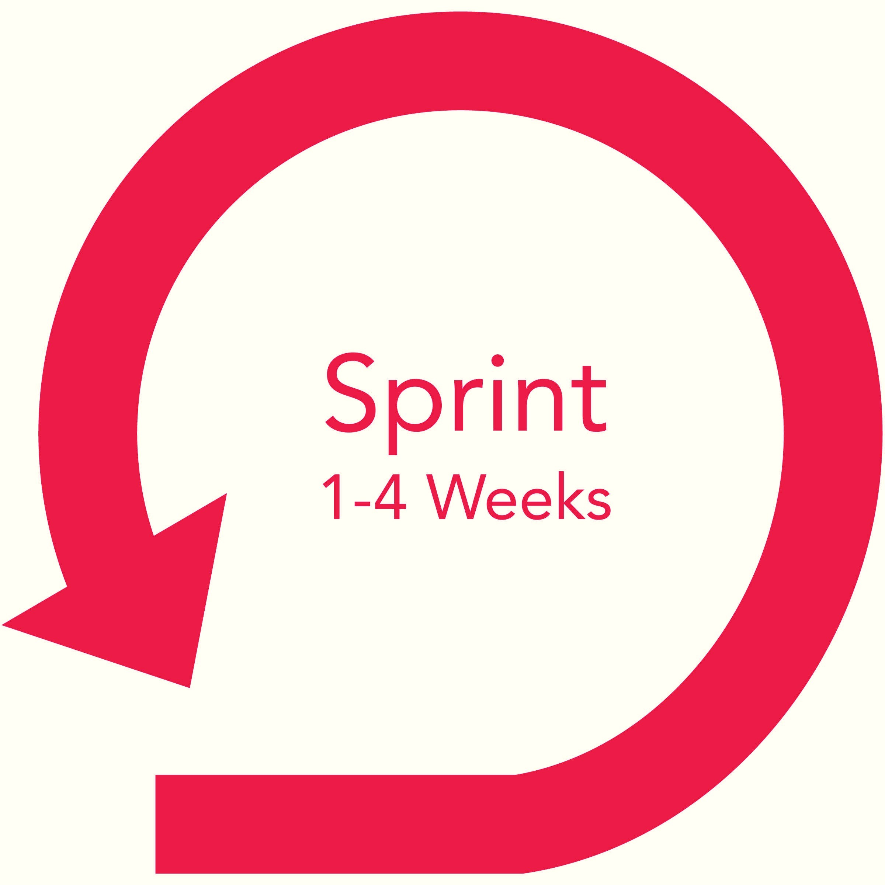

Scrum
What is Scrum?
Scrum is a framework that helps teams work together. Scrum encourages teams to learn through experiences, self-organize while working on a problem, and reflect on their wins and losses to continuously improve.
Scrum Development
Product Backlog
Sprint Planning
A sprint is the actual time period when the scrum team works together to finish an increment. Two weeks is a pretty typical length for a sprint, though some teams find a week to be easier to scope or a month to be easier to deliver a valuable increment.
Daily Scrum Meeting
Sprint Review
Sprint Retrospective
The main roles in the Scrum Project
A self-organizing and cross-functional team
Who is Product Owner?
Scrum Master

Scrum Development Team

Advantages of Scrum
- Quicker release of useable product to users and customers
- Higher quality
- Higher productivity
- Lower costs
- Greater ability to incorporate changes as they occur
- Better employee morale
- Being able to complete complex projects that previously could not be done.
Disadvantages of Scrum
- It does not care about the final project deadline
- It requires a team environment
- It requires experience